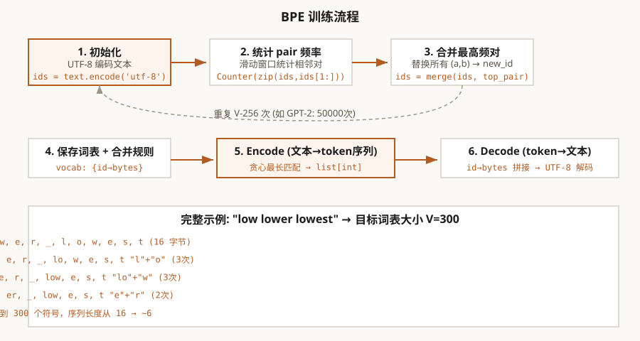

第1章 BPE 分词器
从零实现 Byte Pair Encoding——LLM 的"第一道门"
本章怎么学：先把“文字如何变成数字”想清楚
- 前置知识：Python 列表、字典、字符串/bytes、简单循环。
- 学习目标：解释 tokenization 的信息论权衡，推导 BPE 训练/编码/解码流程，并能分析词表大小对序列长度、嵌入参数量和多语言成本的影响。
- 本章产出：一个能训练、编码、解码的最小 BPE Tokenizer。
- 完成标准：你能说清楚一段文本如何变成 token ID，以及 token ID 如何还原成文本。
- 练习产出：提交 tokenizer 代码、3 组中英混合测试、复杂度分析，以及一段不同词表大小下 token 数变化的实验记录；可用 Ch01 BPE 作业测试 检查核心实现。
1.1 Tokenizer 定位：从文本接口到工程成本
Tokenizer 是 LLM 的第一层接口。它把原始字符串变成 token ID，也同时决定了序列长度、嵌入矩阵大小、上下文窗口利用率和服务计费口径。本章不把分词当作预处理细节，而是把它作为训练工程和推理工程共同依赖的模型契约来实现。
- 训练侧：分词规则改变会改变 token 分布、batch token 数、embedding 参数量和数据质量诊断。
- 推理侧：同一段文本的 token 数会影响上下文容量、KV Cache 显存、延迟和调用成本。
- 发布侧：checkpoint、chat template、特殊 token 和 tokenizer 文件必须一起版本化，否则模型接口会失配。
接下来的实现只保留 BPE 的最小可解释内核：统计 pair 频率、按优先级合并、保存 merge 表，并用同一套规则完成编码和解码。理解这条链路后，再比较 WordPiece、Unigram LM 或 byte-level tokenizer 会更容易判断它们的工程取舍。
1.2 开发环境
本课程代码在 CPU 上即可运行。推荐 Jupyter Notebook 或 VS Code 作为开发环境。
1.3 Token 是什么？——信息论视角
LLM 不直接处理字符或字符串，而是处理 token——文本的最小不可再分单元。每个 token 对应一个整数 ID，模型看到的是整数序列，不是文字。
从信息论看分词
假设一段文本的信息量是 比特。如果我们用 n 个 token 表示它，每个 token 平均携带 比特的信息。分词器的目标是：在给定词表大小 的前提下，最小化每段文本所需的 token 数量。这正是率失真理论（Rate-Distortion Theory）中的经典权衡：
- 词表越大（V 大），每个 token 信息密度高，序列短，但嵌入矩阵 参数量大
- 词表越小（V 小），参数量少，但序列长，计算量和推理延迟增加
为什么不能直接用词？——Zipf 定律
自然语言遵循 Zipf 定律：第 高频词的频率与 成正比。这意味着约一半的词只出现一次——如果用"词"级别的词表，稀有词会导致严重的稀疏性问题。同时，词级词表无法处理未登录词（OOV）。
子词分词（Subword Tokenization）的洞见：在"字符"和"词"之间找到一个中间粒度。常见词（如 "the"、"and"）保留为完整 token，罕见词被分解为更小的子词（如 "tokenization" → "token" + "ization"），任何未登录词都可以回退到字符甚至字节级别。
BPE 的字节级设计
GPT 系列的 BPE 分词器在字节（byte）级别操作——基础词表是 256 个字节值（0x00-0xFF），而非字符。这意味着无论文本是英文、中文、阿拉伯文还是 Emoji，底层都统一处理为字节序列。UTF-8 编码将 Unicode 字符映射为 1-4 个字节，BPE 在这个字节序列上做合并。好处是：任何字符串都可以被 token 化，没有 OOV。
1.4 BPE 算法本质：数据压缩驱动的符号归纳
BPE（Byte Pair Encoding）由 Gage（1994）提出用于通用数据压缩，Sennrich 等人（2016）将其引入神经机器翻译。理解 BPE 的关键是：它不是 NLP 特定的方法，而是通用的压缩策略。
核心观察：频繁模式 = 冗余
在任意字节序列中，某些相邻字节对（byte pair）会反复出现。例如在英文文本中，字节序列 "t" + "h" 出现频率极高。BPE 的策略是：把这个高频对合并为一个新的符号，从而缩短序列长度。每次合并相当于发现了一个重复模式并将其抽象为一个更高级的符号。
算法流程（抽象层）
每次合并操作将序列长度缩短 （该对的出现次数）。经过 次合并后，序列总长度大幅减少，同时词表从 256 增长到 。
为什么合并最高频对是合理的？
从压缩的角度看：假设我们有一个 token 序列，想用一个新的合并符号替换某个相邻对。替换后序列长度缩短，而替换规则是确定性的。合并最高频对等价于在每一步最大化序列长度压缩比。这是一种贪心启发式，不保证找到全局最优合并序列；实践效果还取决于语料、预分词和词表预算。
从信息论的角度：频繁共现的相邻符号对通常值得被词汇化，但 raw 频率并不等同于互信息。高频 pair 可能只是由高频单字节组合而成，因此 BPE 的选择标准更准确地说是局部压缩收益，不是 PMI 或语义关联的最优估计。
一个具体例子
注意："e"+"r" 在第 3 轮才被合并是因为前两轮中 "l"+"o" 和 "lo"+"w" 的频率更高。合并的顺序完全由频率决定——这是 BPE 唯一的"学习信号"。
Worked Example：每轮合并后必须重新统计 pair
实现 BPE 时最常见的错误，是第 1 轮统计完 pair 之后反复使用旧计数。BPE 的计数对象不是原始字符串，而是当前 token 序列；一次合并会改变相邻关系，下一轮必须重新跑 _get_stats。
| 阶段 | 当前序列 | 主要 pair 计数 | 下一步选择 |
|---|---|---|---|
| 初始 | l o w _ l o w e r _ l o w e s t | (l,o)=3, (o,w)=3, (w,e)=2, (e,r)=1, (e,s)=1 | 按 tie-breaking 选 (l,o) |
合并 (l,o)->lo 后 | lo w _ lo w e r _ lo w e s t | (lo,w)=3, (w,e)=2, (e,r)=1, (e,s)=1 | 选 (lo,w) |
合并 (lo,w)->low 后 | low _ low e r _ low e s t | (low,_)=1, (_,low)=2, (low,e)=2, (e,r)=1, (e,s)=1 | 从新的并列最高频中选一个 |
旧计数里的 (o,w)=3 在第 1 轮后已经不存在，因为 o 被合并进 lo。如果继续按旧计数合并 (o,w)，代码会找不到这个 pair，或者产生与当前 tokenization 不一致的词表。Ch01 作业的 _get_stats、_merge 和 train 测试正是在检查这个循环不变量：统计当前序列，合并当前 pair，再重新统计。

图 1-1: BPE 分词器训练与编解码完整流程
1.5 编程练习 1：统计相邻 token 对频率
BPE 训练的第一步是获取当前的 token 序列，并统计所有相邻 pair 的出现次数。这是算法的"眼睛"，决定了每次合并什么。
🖥️ 练习 1：实现 _get_stats
任务：实现函数 _get_stats(ids)，输入一个整数列表（token ID 序列），返回所有相邻 pair 的出现频数字典。
要求：
- 输入
ids是list[int] - 输出是
dict[tuple[int, int], int]— key 是 (左 token, 右 token)，value 是该 pair 出现的次数 - 相邻对不重叠：对序列 [1,2,3,4]，考虑 (1,2)、(2,3)、(3,4)
- 可以使用
collections.Counter或手写字典
# 预期用法
assert _get_stats([1, 2, 3, 1, 2]) == {(1,2): 2, (2,3): 1, (3,1): 1}
# 空序列或单元素序列应返回空字典
assert _get_stats([]) == {}
assert _get_stats([42]) == {}
💡 zip(ids, ids[1:]) 是 Python 中生成相邻对的标准惯用法。它创建了一个滑动窗口大小为 2 的迭代器，既不产生多余的中间列表，又干净地表达了"相邻"概念。
1.6 深入理解：频率选择的压缩启发式
上一节实现了 _get_stats，接下来需要回答一个核心问题：为什么 BPE 常合并最高频 pair？
压缩视角
每次合并将序列中所有 替换为一个新符号 。替换后，序列长度减少 （ 是该 pair 的频率），词表增加 1。选择最高频的 pair 意味着在每一步最大化边际压缩率 。这是一个简单有效的贪心启发式；它不能保证全局最优，实际效果取决于语料、目标词表大小、预分词和 tie-breaking 规则。
与 Huffman 编码的对比
Huffman 编码从底层向上构建最优前缀码——它合并频率最低的两个节点。BPE 却合并频率最高的 pair。区别在于：
- Huffman 构建的是编码——每个符号有唯一的二进制码。合并低频节点使高频符号获得短编码。
- BPE 构建的是词表——序列中相邻的符号被抽象为一个新符号。合并高频 pair 使最常见组合被"词汇化"。
两者都通过反复合并来构建层次结构，但合并准则服务于不同的最终目标。
频率与互信息
两个 token 的点互信息（PMI）定义为：
高频率不一定意味着高 PMI——例如 "t" + "h" 在英语中很常见，但这是因为 "t" 和 "h" 各自就很常见。真正的"有意义"组合是频率远超各分量独立概率乘积的 pair。在标准 BPE 实现中直接使用 raw 频率而非 PMI，这对高频但弱相关的 pair（如 " " + "t"）可能会产生次优合并。这是 BPE 已知的局限性之一。
1.7 编程练习 2：实现 pair 替换
找到最高频 pair 后，我们需要在序列中原地替换所有出现位置。这是 BPE 训练的核心操作。
🖥️ 练习 2：实现 _merge
任务：实现函数 _merge(ids, pair, new_id)，在整数序列 ids 中找到所有 pair 的出现位置，将其替换为 new_id。
要求：
- 输入
ids是list[int]，pair是tuple[int, int]，new_id是int - 返回一个新的
list[int]，不修改原列表 - 替换不重叠：合并 (1,2) 在 [1,2,1,2] 中产生 [new_id, new_id]，而不是 [new_id, 1, 2]
- 遍历一次完成，复杂度
- 不能使用
str.replace或正则表达式
# 预期用法 assert _merge([1, 2, 3, 1, 2], (1, 2), 99) == [99, 3, 99] assert _merge([1, 1, 1], (1, 1), 99) == [99, 1] # 不重叠替换 assert _merge([5, 6], (1, 2), 99) == [5, 6] # 无匹配
💡 为什么用 while 而不是 for？因为循环体内需要根据是否匹配来跳 1 步或 2 步，用 for i in range(len(ids)) 无法在三目运算符中灵活控制步长。while + 手动索引是最清晰的实现。
1.8 BPE 训练循环：从字节到词表
有了 _get_stats 和 _merge，BPE 训练就是一个简单的迭代过程。每次迭代：
- 统计当前序列的所有相邻 pair 频率
- 找到最高频的 pair
- 记录合并规则
- 在序列中应用合并
- 将新 token 的字节表示存入词表
这个过程产生两个数据结构：
- vocab（
dict[int, bytes]）：token id 到原始字节序列的映射——用于解码 - merges（
dict[tuple[int,int], int]）：pair 到新 token id 的映射——用于编码
词表的构建方式：新 token 的字节表示是其组成 token 的字节拼接。例如，如果 token 256 = "lo"（由 token 108='l' 和 token 111='o' 合并），则 vocab[256] = vocab[108] + vocab[111]。这个递归定义使得 vocab 中的每个条目都可以追溯到原始字节。
Worked Example：BPE merge trace 与 token savings
以 abababa 为例，初始字节序列长度为 7。第一轮相邻 pair 中 (a,b) 与 (b,a) 都出现 3 次；本章实现按当前扫描顺序选到 (a,b)，创建 256="ab"，非重叠替换后序列从 [a,b,a,b,a,b,a] 变成 [256,256,256,a]，长度 7→4，节省 3 个 token。第二轮 (256,256) 出现 2 次，创建 257="abab"，序列变成 [257,256,a]，长度 4→3，再节省 1 个 token。
Ch01 作业中的 bpe_training_trace(text, vocab_size, max_steps) 要求把每一步的 pair、count、new_id、before_length、after_length 和 tokens_saved 都记录下来。这样学生能区分两件事：BPE 的压缩来自高频相邻 pair 的非重叠替换；每轮合并后必须重新统计 pair，不能沿用旧频率表。
复杂度分析
如果语料有 个 token，需要 次合并：
- 每次合并需要扫描整个序列（）来统计频率和替换
- 总复杂度
- 实际中 ， 可达数亿——所以原始 BPE 训练可能很慢
优化方案：用优先队列（heap）维护 pair 频率，每次合并后只更新受影响的局部区域。GPT-4 的 tiktoken 库使用了高度优化的并行版本。
1.9 编程练习 3：实现 BPE 训练
现在将 _get_stats 和 _merge 组合成完整的训练循环。
🖥️ 练习 3：BPE 训练函数
任务：实现 train(text, vocab_size)，在输入文本上训练 BPE 词表，返回 (vocab, merges)。
要求：
- 输入
text为str，vocab_size为int（目标词表大小，≥ 256） - 基础词表为 256 个字节 token（
vocab[i] = bytes([i])） - 返回
(vocab, merges)：vocab: dict[int, bytes]merges: dict[tuple[int,int], int]
- 每次迭代找最高频 pair（用
max(stats, key=stats.get)） - 新 token id 从 256 开始递增
- 训练结束后序列本身可以丢弃——我们只需要 merges 规则
# 预期用法
text = "low " * 100 + "lower " * 80 + "lowest " * 60
vocab, merges = train(text, vocab_size=280)
# 验证
assert len(vocab) >= 280
assert 256 in vocab # 第一个新 token
# 常见合并应该出现在 merges 中
print(f"词表大小: {len(vocab)}")
print(f"合并规则数: {len(merges)}")
💡 vocab 的递归构造：vocab[new_id] = vocab[pair[0]] + vocab[pair[1]] 利用了 vocab 中已经存储的字节表示——pair[0] 和 pair[1] 可能是原始字节 token 或之前合并产生的 token。这种递归定义确保了解码的正确性。
1.10 编码与解码——从规则到完整的分词器
训练完成后，我们用 merges 规则对新文本进行编码，用 vocab 将 token 序列解码回文本。
解码：简单而完美可逆
解码是查表拼接：对 token ID 序列中的每个 ID，从 vocab 中取出对应的字节串，拼接后用 UTF-8 解码：
由于 vocab 中的每个 token 都是字节序列的确定拼接，解码不需要任何搜索或模型——它总是生成唯一结果。这是 BPE 相比其他分词方案的关键优势。
编码：按 merge rank 的确定性贪心合并
编码需要将新文本转化为 token ID 序列。策略是：从字节序列开始，反复应用合并规则，每次优先应用按训练顺序最早（即优先级最高）的合并。
具体做法：
- 将文本编码为 UTF-8 字节序列，转为整数列表
- 重复检查所有相邻 pair——如果某个 pair 在 merges 字典中，找到最早被合并（即 new_id 最小）的那个 pair
- 应用该合并，更新序列
- 直到没有可合并的 pair 为止
寻找"最早合并"的技巧：min(stats, key=lambda p: merges.get(p, float('inf')))。如果 pair 不在 merges 中，返回 inf——只有已经学习过的合并规则才会被应用。
Worked Example：编码阶段不重新按频率学习
假设训练后得到如下 merge 规则，数字越小表示训练时越早加入、优先级越高：
| merge rank | pair | new token | 字节含义 |
|---|---|---|---|
| 256 | ('l', 'o') | lo | 先学到常见片段 lo |
| 257 | ('lo', 'w') | low | 再把 lo 和 w 合成 low |
| 258 | ('e', 'r') | er | 最后学到后缀 er |
现在编码新文本 "lower"。初始字节序列是 [l, o, w, e, r]，相邻 pair 有 (l,o)、(o,w)、(w,e)、(e,r)。其中在 merges 中出现的是 (l,o) 和 (e,r)；即使二者在这条新文本中都只出现一次，也必须选择 rank 更早的 (l,o) → lo：
如果编码阶段重新统计当前输入频率或临时选择“看起来最长”的片段，就会破坏训练时保存的 merge 优先级，导致同一词表在不同实现中切分不一致。课程作业中的 encode 因此使用 merges.get(pair, inf) 找当前可用 pair 的最小 rank，而不是重新训练一个局部分词器。
1.11 编程练习 4-5：实现完整的编码与解码
🖥️ 练习 4：实现 decode
任务：实现 decode(ids, vocab)，将 token ID 序列还原为文本。
要求：
- 输入
ids为list[int]，vocab为dict[int, bytes] - 返回
str，用.decode('utf-8', errors='replace')处理非法字节序列 - 非法字节用
�替换
# 预期用法（需先训练）
vocab, merges = train("hello hello hello", vocab_size=260)
decoded = decode([104, 101, 256], vocab)
print(decoded) # 假设 256="he" → 应输出 "he"
💡 解码只有两行 Python！BPE 的美妙之处在于：训练复杂，但解码简单。这保证了推理阶段的高效性——只需要一次查表和一次 UTF-8 解码。
🖥️ 练习 5：实现 encode
任务：实现 encode(text, merges)，将文本编码为 token ID 序列。
要求：
- 输入
text为str，merges为dict[tuple[int,int], int] - 返回
list[int] - 从 UTF-8 字节序列开始，反复应用 merges 中优先级最高的合并
- 用
min(stats, key=lambda p: merges.get(p, float('inf')))找最高优先级 pair - 当没有任何 pair 在 merges 中时停止
# 预期用法
vocab, merges = train("low " * 100 + "lower " * 80 + "lowest " * 60, vocab_size=280)
text = "lowest lower"
ids = encode(text, merges)
print(f"编码 {text!r} → {ids}")
# 验证循环：encode → decode 应得到原始文本
decoded = decode(ids, vocab)
assert decoded == text, f"循环不匹配: {decoded!r} != {text!r}"
💡 编码的贪心性质：每轮只应用一个合并——当前可用的 merge rank 最高（训练时最早加入）的那个。merge rank 来自训练阶段保存的合并顺序；编码是按这个固定优先级反复合并相邻 pair，而不是重新统计当前输入中的频率，也不等同于一般意义上的最长匹配。
1.12 主流分词器对比
| 算法 | 方向 | 合并/分裂准则 | 代表模型 |
|---|---|---|---|
| BPE | 自底向上（合并） | 最高频相邻对 | GPT-2/3/4, Llama |
| WordPiece | 自底向上（合并） | 最大似然增益 | BERT |
| Unigram | 自顶向下（剪枝） | 删除最低概率 token | XLNet, ALBERT |
| SentencePiece | 多种（空格归一化） | BPE 或 Unigram | Llama, T5, DeepSeek |
SentencePiece 的关键创新是将空格视为普通字符（用 ▁ U+2581 表示），使分词完全语言无关。DeepSeek-V3 使用了 SentencePiece BPE，词表约 128K。
1.12A 如何评价一个 Tokenizer
实现 BPE 只是第一步。真正训练 LLM 时，tokenizer 会影响序列长度、嵌入参数量、上下文窗口利用率、推理延迟和多语言覆盖。一个词表不是“越大越好”或“越小越好”，而是在数据分布、模型规模和部署成本之间做取舍。
核心评价维度
| 维度 | 问题 | 常用度量 | 风险 |
|---|---|---|---|
| 压缩率 | 同一文本需要多少 token | tokens/character、tokens/word、平均序列长度 | 压缩差会抬高训练 FLOPs 和推理延迟 |
| 可逆性 | encode 后是否能无损 decode | round-trip 测试、Unicode 覆盖 | 破坏空格、标点或多字节字符会污染数据 |
| 语言公平性 | 不同语言是否承担相近 token 成本 | 按语言统计 token/character | CJK、代码、少数语言可能被过度切碎 |
| 词表预算 | 词表大小是否匹配模型规模 | V * d_model 嵌入参数量 | 小模型使用超大词表会把参数浪费在 embedding 上 |
| 特殊 token | 系统、用户、工具、padding 是否有稳定边界 | 特殊 token ID 表、冲突测试 | 聊天模板或工具调用边界不清会影响对齐和服务 |
| 领域适配 | 代码、数学、医学等语料是否切分合理 | 领域样本 token 数、常见符号切分 | 代码缩进、公式符号或术语被切得过碎 |
一个小实验
选取英文、中文、代码、数学公式和 emoji/混合文本各 100 条，分别用不同 vocab size 或不同 tokenizer 编码，报告平均 token 数、P95 token 数、round-trip 是否成功，以及 embedding 参数量 。如果中文平均 token 数是英文的 2-3 倍，那么同样 8K context 对中文用户的有效文本容量就更小；这不是模型能力问题，而是分词器成本问题。
Ch01 作业中的 tokenizer_report(tokenizer, texts, vocab_size, d_model) 对应这个实验的最小版本：它统计 avg_tokens、p95_tokens、tokens_per_character、round_trip_success_rate 和 embedding_params。进一步的 tokenizer_group_report(tokenizer, groups, vocab_size, d_model) 会按英文、中文、代码、数学或 emoji 等分组分别报告 token 成本，并计算最高/最低 tokens_per_character 的 disparity。学生应该用同一个文本集合比较不同 vocab size，而不是只报告“能 encode/decode”或一个全局平均数。
Worked Example：从 tokenizer report 看成本
设同一个 tokenizer 对 4 条文本的编码长度如下：
| 文本组 | 字符数 | token 数 | tokens/character |
|---|---|---|---|
| 英文 | 20 | 6 | 0.30 |
| 中文 | 8 | 12 | 1.50 |
| 代码 | 16 | 10 | 0.625 |
| emoji/混合 | 10 | 14 | 1.40 |
全局总 token 数为 6+12+10+14=42，平均每条 avg_tokens=10.5，排序后长度为 [6,10,12,14]，教学版 P95 可取最大值 14。总字符数为 54，所以 tokens_per_character=42/54≈0.778。若词表大小 V=50,000、d_model=768，仅输入嵌入矩阵就有 50,000 * 768 = 38.4M 参数。
分组成本也不能忽略：中文的 1.50 与英文的 0.30 相比，disparity 为 1.50/0.30=5.0。这意味着同样 8K token 上下文能容纳的中文字符数远少于英文字符数。评价 tokenizer 时必须同时看压缩率、round-trip 和 embedding 参数，而不是只看词表大小。
1.12B Tokenizer 是模型接口契约：特殊 token、模板与 checkpoint
很多训练事故不是 Transformer 代码写错，而是 tokenizer 协议不一致：训练时的 role token 和推理时不同，新增特殊 token 后没有扩展 embedding，padding token 被当成普通文本学习，或评测集用另一个 tokenizer 计算上下文长度。对 LLM 训练和推理工程师来说，tokenizer 不只是预处理工具，而是模型 checkpoint 的一部分。
1. 特殊 token 必须有稳定语义
现代 LLM 通常至少需要以下特殊 token 或等价协议：
| 类型 | 作用 | 出错后果 |
|---|---|---|
| BOS/EOS | 标记序列开始和结束，控制生成停止 | 模型不停止、过早停止，或把结束符当正文输出 |
| PAD | batch padding，通常不参与 loss | padding 被训练成可预测文本，loss 分母和 attention mask 错 |
| role token | 区分 system/user/assistant/tool | 模型混淆说话人，SFT mask 无法可靠定位回答 span |
| tool/function token | 标记工具调用、参数 JSON 或返回值 | 结构化调用边界不稳定，推理服务难以解析 |
| reserved token | 为未来扩展保留 id | 后续扩展需要重训或迁移 embedding |
特殊 token 不应通过普通 BPE merge “碰巧”切出来，而应作为不可拆分的原子 token 处理。否则字符串 <|assistant|> 可能被切成多个普通片段，模型难以学到稳定边界，安全过滤和工具解析也会变脆弱。
2. Chat template 决定 SFT 的监督边界
同一段对话在 tokenizer 层通常先被序列化为模板文本，再转成 token id。SFT 时 label mask 要依赖这个模板定位 assistant response：
如果训练管线使用 <assistant>，推理服务却使用 Assistant:，模型看到的角色边界就变了。短期现象可能只是格式漂移；长期看会影响多轮对话、拒答边界、工具调用和 DPO/GRPO 中的序列 log probability 对齐。Ch09 的 SFT 数据管线会继续使用这里的原则：模板、tokenizer、label mask 必须共同定义训练目标。
3. 修改词表等于修改模型形状
词表大小 V 决定 token embedding 和 LM head 的形状。若一个已经训练好的模型使用 V=50,257，后来新增 100 个特殊 token，embedding 需要从 [50257, d_model] 变成 [50357, d_model]。这不是配置文件里的小改动，而是 checkpoint 兼容性问题：
- 输入 embedding：新增行需要初始化，常见做法是随机初始化或用相近 token 的均值初始化。
- LM head：若使用 weight tying，LM head 会随 embedding 扩展；若不共享，也要同步扩展输出投影。
- 旧 checkpoint：加载时会出现 shape mismatch，必须显式处理新增行，而不是忽略报错。
- 旧数据：旧 token id 的语义必须保持不变；重新排列 token id 会破坏所有已有权重。
因此生产模型通常会冻结已有 token id，只在词表末尾追加新 token。若需要彻底更换 tokenizer，通常意味着需要继续预训练或至少做较长的适配训练，因为整个 embedding 空间的几何结构已经改变。
4. Tokenizer 版本要和模型一起发布
一个可复现的模型包至少要同时包含 tokenizer.json 或 SentencePiece 模型、特殊 token 映射、chat template、normalization 规则和模型配置。只发布 model.safetensors 不足以复现同一模型行为。推理服务加载模型时也应检查：
这些检查不是形式主义。若 tokenizer 把中文、代码缩进、JSON 引号或 emoji 切分方式变了，模型的上下文长度、生成概率和停止行为都会变化；这会一路传导到第 6 章的 weight loading、第 9 章的序列 log probability 和第 10 章的 token 成本。
1.12C 多语种 Tokenizer 训练：从语料配比到 token 成本
面向真实 LLM 时，tokenizer 不是在一份英文语料上随手训练出来的工具，而是跨语言、跨脚本、跨领域的数据接口。它会决定不同语言在同样 context window 中能表达多少信息，也会影响训练 batch 的有效文本量、推理计费、KV Cache 显存和长上下文体验。多语模型尤其需要把 tokenizer 训练看成一次数据工程决策。
1. 语料配比会改变 merge 规则
BPE 只看训练语料中的相邻符号频率。如果 tokenizer 训练语料中英文占 95%，中文、阿拉伯文、印地语、代码和数学公式只占很小比例，高频 merge 会优先服务英文模式；其他语言会更多回退到字节或短片段，表现为 token 数变多、上下文容量下降。反过来，如果为了少数语言盲目过采样，也会牺牲高流量语言和领域文本的压缩率。
| 设计项 | 工程问题 | 推荐做法 | 典型失败 |
|---|---|---|---|
| 语言采样 | 不同语言是否都能获得足够 merge 预算 | 按目标用户和训练数据设定采样上限/下限，而不是直接按原始网页量采样 | 低资源语言被切成字节，8K context 实际只能装很短文本 |
| 领域采样 | 代码、数学、表格、JSON 是否被合理压缩 | 为代码缩进、常见符号、LaTeX、结构化标记保留代表性样本 | 代码空格和标点过碎，工具调用 JSON 更容易超长 |
| Unicode 归一化 | 视觉相同字符是否映射为同一序列 | 明确 NFC/NFKC、大小写、全角/半角、空白字符策略，并在训练与推理保持一致 | 同一文本因归一化不同产生不同 token，影响去重、评测和缓存 |
| Byte fallback | 未见字符能否被无损表示 | 保留 byte-level fallback 或等价机制，保证任意 Unicode 字符可编码 | 罕见字符、emoji、混合脚本输入出现 OOV 或不可逆解码 |
| 特殊 token 预算 | chat、tool、多模态占位符是否需要原子边界 | 预留系统、角色、工具、图像/音频占位、未来扩展 token | 后续新增 token 导致 embedding 形状变化，需要重新适配模型 |
2. 用 fertility 衡量不同语言的 token 负担
多语 tokenizer 常用 fertility 描述一个自然单位被切成多少 token。对英文可以看 tokens/word，对中文、日文、泰文等无空格或弱空格语言，更稳定的是 tokens/character 或 tokens/byte。课程中建议同时报告三类量：
- tokens/character：衡量同样字符长度下的 context 成本，适合中英对比。
- tokens/byte：衡量 UTF-8 多字节脚本是否被过度回退，适合跨脚本比较。
- P95 token length：衡量长尾样本是否会在 packing、RAG context 或工具参数中爆掉。
假设同一 tokenizer 对 1,000 字符英文平均产生 300 token，对 1,000 字符中文产生 1,500 token。在 8K token context 下，英文约可容纳 26,666 字符，中文约可容纳 5,333 字符。这个差异会直接影响长文问答、RAG chunk size、缓存命中率和用户感知成本。
Worked Example：为什么 tokenizer 训练采样不能只看总量
设 tokenizer 训练预算是 10B 字符，原始候选数据中英文 8B、中文 1B、代码 0.8B、其他语言 0.2B。如果直接按原始比例训练，英文 pair 会主导前几万次 merge；如果把所有语言均匀采样，又会让真实高流量语言损失过多压缩率。一个更稳妥的做法是先定义服务目标，再设采样配比：
- 为主要服务语言设置最低覆盖，例如英文、中文、代码各至少占 tokenizer 训练样本的某个比例。
- 对低资源语言设置温度采样，避免完全按网页量被淹没，也避免过度复制小语料。
- 保留 byte fallback，让没有显式覆盖到的字符仍可无损编码。
- 训练多个候选 tokenizer，用同一组多语/代码/工具调用样本比较 tokens/character、round-trip、P95 长度和 embedding 参数量。
- 最终选择时同时看训练成本和推理成本：少 10% token 可能意味着少 10% attention/KV 成本，但更大的词表会增加 embedding 和 LM head 参数。
3. Tokenizer 决策会传导到训练和推理
多语 tokenizer 的影响不是停留在第 1 章。第 7 章的数据 packing 会按 token 数而非字符数切 batch；第 9 章的 SFT/DPO 会在 token 序列上计算 loss 和 log probability；第 10 章的 KV Cache、TTFT、TPOT 和计费也都按 token 发生。一个语言的 fertility 更高，意味着同样文本会消耗更多训练 FLOPs、更多 KV Cache 和更高推理延迟。
1.13 本章总结：你实现了一个完整的 BPE 分词器
- ✅ _get_stats —— 统计相邻 pair 频率的工具函数
- ✅ _merge —— 在序列中替换 pair 的核心操作
- ✅ train —— 完整的 BPE 训练循环，从字节到目标词表
- ✅ encode / decode —— 使用训练好的 merges 和 vocab 进行推理
- ✅ 理解了 BPE 的数据压缩本质和频率选择的信息论基础
- ✅ 能从压缩率、可逆性、多语言成本、词表预算和特殊 token 评价 tokenizer
- ✅ 能解释多语 tokenizer 训练中的语料配比、Unicode 归一化、byte fallback 和 fertility 指标
全部代码约 50 行，但这是一个可用的 BPE 分词器核心。生产分词器（如 tiktoken）会在同一思想上加入正则预分词、特殊 token、工程优化和兼容性处理；课程实现只保留最小可解释内核。